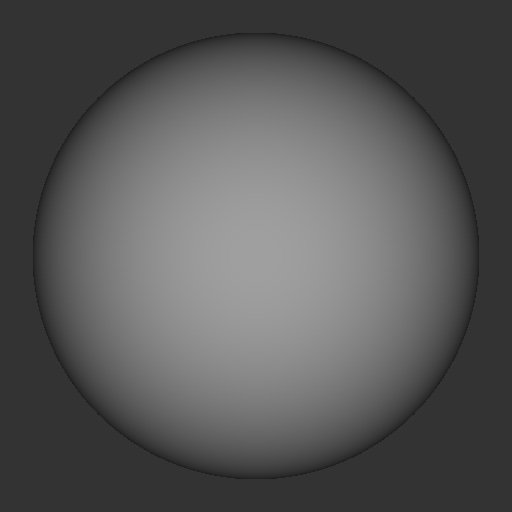
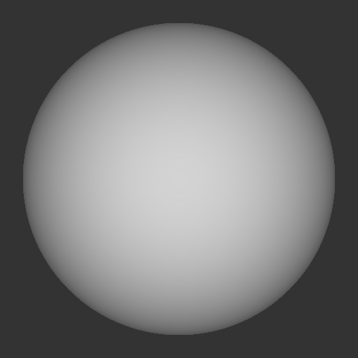
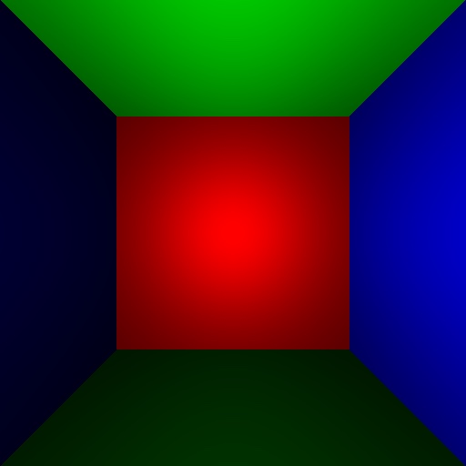
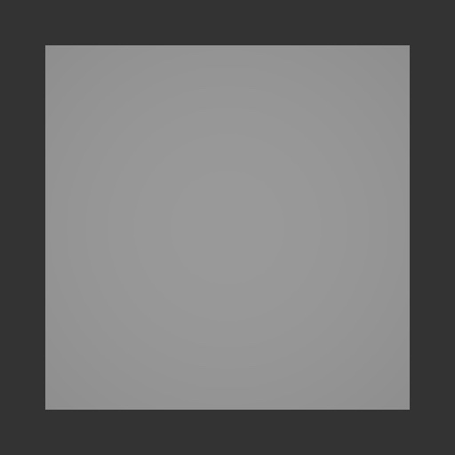
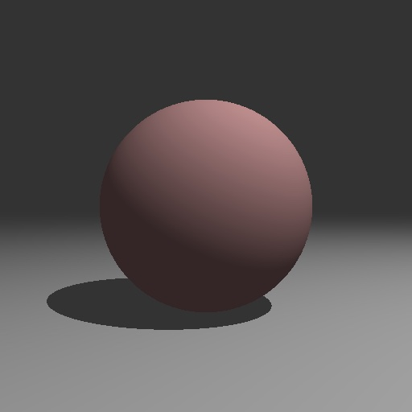
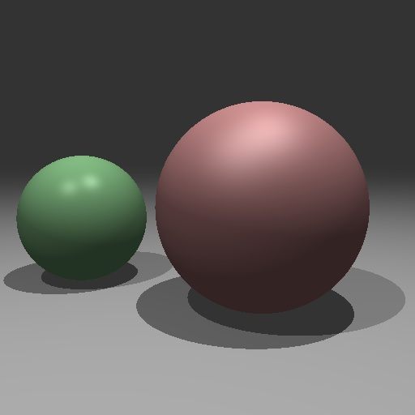
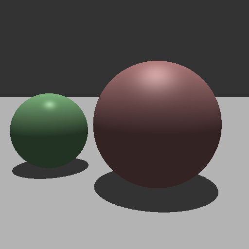
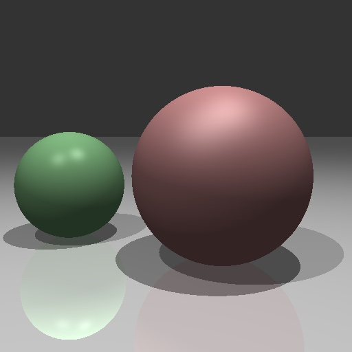
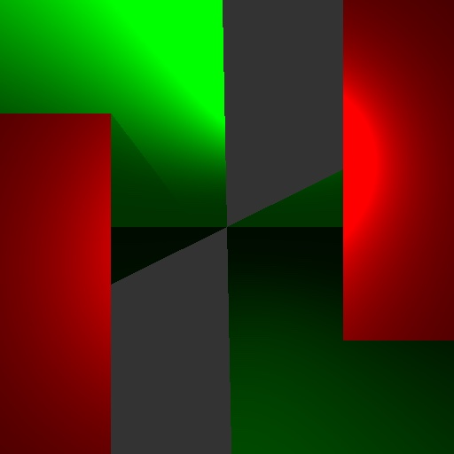
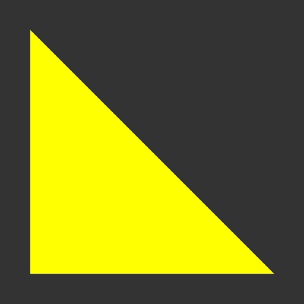

RAYTRACE PROJECT
Name: Trent Repass
Prof: Dr. Denning
Below are several images generated by a raytracer created for a COS 350 project.
Sphere

A simple raytraced sphere.
Sphere with Ambient Lighting

The same sphere as above but with ambient lighting taken into account.
Sphere Room

A "room" created using four raytraced spheres.
Quad

A simple raytraced quadrilateral.
Quad room
A "room" created using four raytraced quadrilaterals.
Ball on Plane

A raytraced ball on a plane with shadowing.
Balls on Plane

Two raytraced balls on a plane with shadowing.
Elective 1: Balls on Plane - Directional Light

All images in this file have all been rendered with point lights, all excpet for this one!
A point light is very similar to an incandescent light bulb that emits light in all directions.
Objects closer to the light will be brighter, and objects further away will be darker.
There are many other different light sources that can be represented to a computer, this
image uses directional lights, for example. The most common example of a direction light in
nature is the sun. Directional lights differ from point lights in that they emit parallel light rays
in a single direction. Moreover, the light ray reach out into infinity. You can think of a directional light
as a giant flash light very far away from a subject, always centered, never dieing off. In this image
in particular, you can tell the difference bewteen them even further. Notice that the plane the balls are
sitting on no longer "fades" into the backround but forms a sharp horizon, if you will.
This shows the idea that directional lights have equal intensity regarless of distance.
Reflective Balls on Plane

Two raytraced balls on a plane with shadowing AND reflective properties applied to the plane.
Reflective Balls on Plane - Antialiased
Two balled raytraced on a plane with shadowing AND reflective properties applied to the plane AND antialiasing.
Creative Artifact

My "creative artifact" was created by messing around with the code that raytraces the quad room.
I created a new function called "create_creative_artifact" that looks very similar to the "intersect_ray_surface"
function. The main difference fround in the former function is that it changes the bounds when checking
for whether or not the passed in surface's radius is within a certain range comparted to the coordinates
of the "p" value and the center of the plane. In this case, if the surface's radius is greater than
the absolute value of the difference between p's z-coordinate and the center of the plane's y-coordinate,
the function reaturns a gfx.no_intersection. The result is a interestingly inverted quad room that moves the
center red square across the left and right sides in front of the top and bottom squares that have now morphed into
more cube-like figures. I also added an extra light to the scene to adequately show the depth of the scene,
making the red figures appear as though they are "in front" of the green ones.
Elective 2: Triangle

This image is the result of simple additions to my already exsisting code to generate the sphere and quad images.
I added another shape type ("triangle") to the shape struct found in the scene.v file. After doing this,
I added an extra check to the "intersect_ray_surface" function to determine whether or not the shape
attribute of the surface object passed to the function is a triangle. If so, it follows the updated logic
to raytrace a triangle. There is a significantly more amount of variables invovled in creating a triangle so
not a ton of logic for the quad or sphere was carried over. This was probably the most difficult part of the project for
me to wrap my head around. Understanding the fact that when you raytrace a triangle you must first predetermine 3 points
to ray through was an important difference when considering the problem. Messing around with the RGB values of the material was
fun too! So seemingly complex for just a simple looking image!
Conclusion
This project was a challenge for sure! It really felt like a culmination of everything I've learned
so far. The most exciting part of this project for me has been the fact that I am creating things
that have visual output. You can constantly see, step by step, what exact changes you are making as
you build your images. In other COS courses, I became discourged rather quickly when somthing didn't
work right beacuse it seemed like everything was being computed in the backround. In this class, and
this project in particular, I really felt like I was always in control of the end result. I also felt
as though I have finally gotten myself into a nice rhythm when it comes to debugging and figuring out
problems. In COS 265, for example, I felt very "dead in water" a lot. This project has only gained my
confidence! Don't get me wrong, I still leaned heavily on help from my friends in the class and Dr. Denning,
my point point is that my confidence in programming is increasing and studying in a supportive environment is
just supplementing that build.
I learned a lot about the integration of math and code with this project. More specifically translating
equations into code. I was thinking way more logically about what I was doing as opposed to succumbing to
wishful coding. I also became way more comfortable with the V coding language. Where I felt I
was just sort of "fumbling through" in previous projects, this project is where everything with V started
to really click. Lastly, I don't think there are any bugs in my code...all required images render just fine!